| 日付 | 2012年9月22日（土） |
|---|---|
| 山域 | 奥秩父 |
| メンバー | 友人（男1女3子供1） |
| 山行形態 | 子連れ日帰り |
| アクセス | 車 |
| ルート (Map) | 作場平 (8:51) - (10:03) 笠取小屋 (10:23) - (10:58) 笠取山 (11:39) - (12:06) 水干 - (12:47) 笠取小屋 - (13:03) ヤブ沢峠 - (13:55) 作場平 |
本日は久しぶりに友人と山に登ることにする。
場所は笠取山。奥秩父にあり、多摩川の水源の山として有名である。
作場平駐車場に到着する。標高1310m。
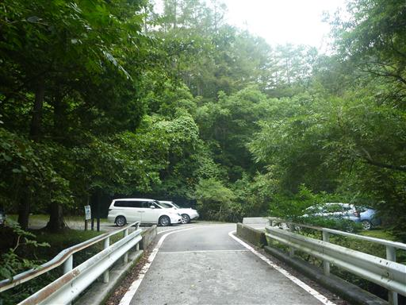
登山道入口は駐車場のすぐ側にある。
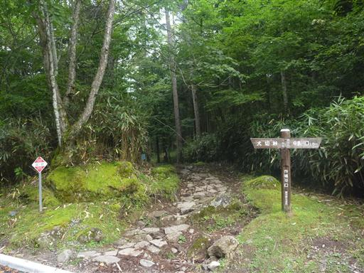
沢沿いの良く整備された歩きやすい道を登っていく。
地面に足がたくさんある3cm程度の虫が這っている。
ちらほら見られるので何の虫だろうと思って歩いていくと…
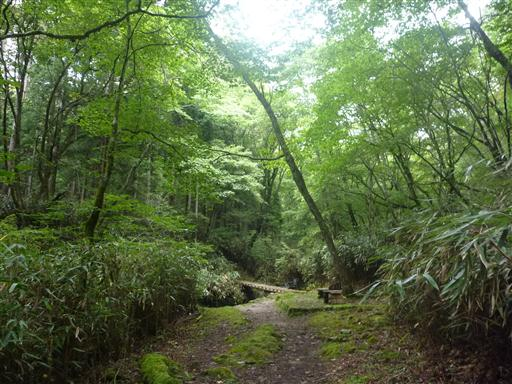
ぎゃあーーーー。
足の踏み場もないとはこのようなことを言うのだろう。
帰って調べたところ、この虫はキシャヤスデという種らしい。
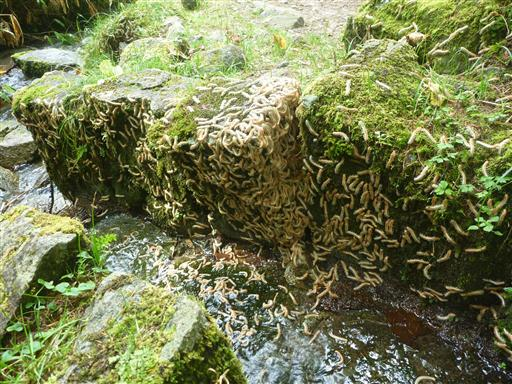
大量発生ポイントを早々に抜け出す。
その後もキシャヤスデはちらほら見られる。
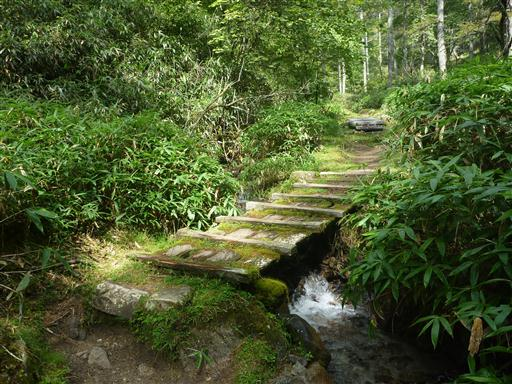
笠取小屋に到着。小屋前にはベンチとテーブルがあるためここで小休止。
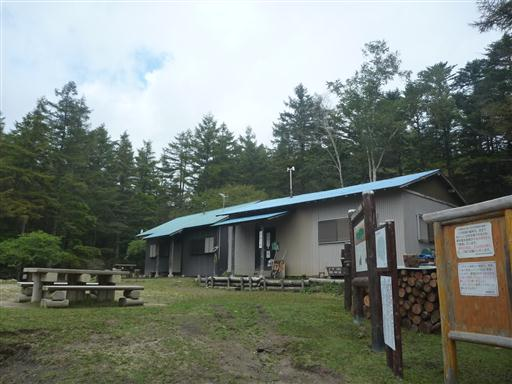
ここからも良く整備された道が続く。
足元には木の板が敷き詰められていて、あまり登山道という感じがしない。
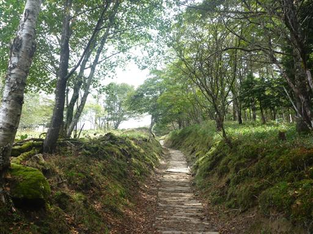
樹木がなくなり視界が大きく開ける。正面に見える丘は小さな分水嶺だ。
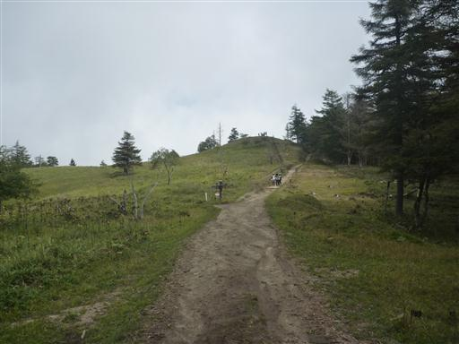
小さな分水嶺に到着。ここは多摩川、荒川、富士川の分水嶺だ。
こんな小さな丘が3つの大きな川の分水嶺とは不思議だ。
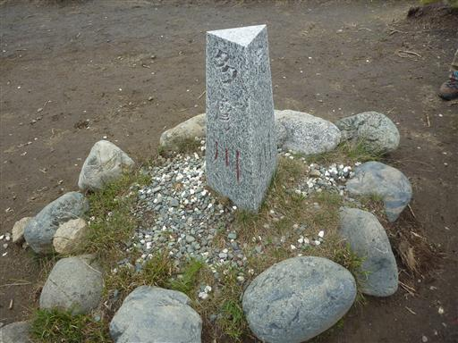
ここからは笠取山が良く見える。
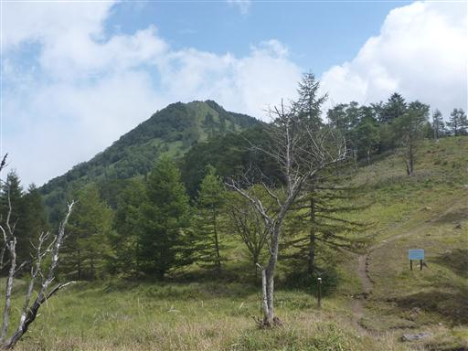
歩を進めて笠取山の直下までやってくる。
これまでずっと傾斜の緩い道だったが、山頂直下だけやたら急斜面だ。
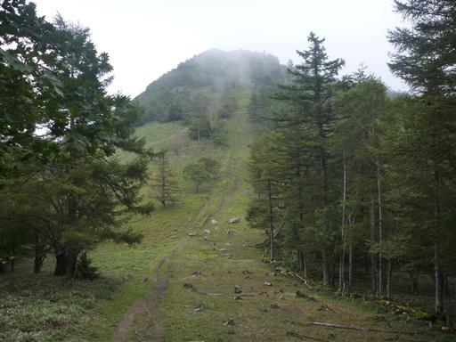
急斜面をゆっくり登っていく。振り返ると展望が良い。
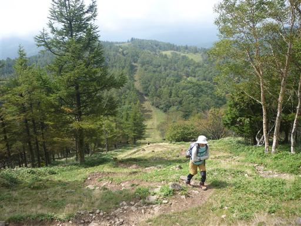
笠取山山頂に到着。
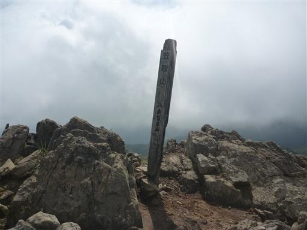
北西方向に奥秩父主脈の山々が望める。
展望は良い山なのだが、今日の天気ではあまり遠くの景色は見えない。

昼食をとっていると完全に雲に覆われてしまった。
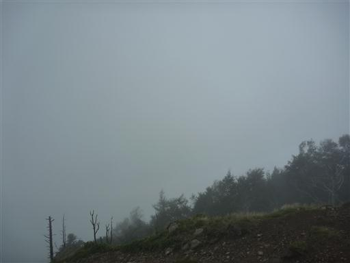
山頂を出発し、東に向かう稜線を歩く。この辺りは少し道が細く、岩場がある。
山頂を出発したのに、なぜか登山道は登りが多い。
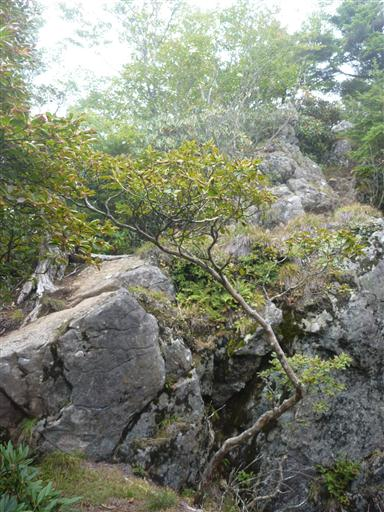
しばらく進むと再び笠取山の山頂標識がある。標高1953m。
展望はないが、こちらが本当の山頂のようだ。
山梨百名山の山頂標識は、たまによく分からない場所に立っている。
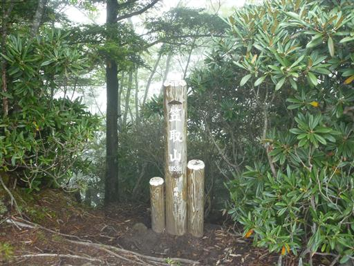
シャクナゲに覆われた稜線を歩いていく。

途中で分岐点が現れる。地図では一本道のはずなのだが…
稜線を外れて細い踏み跡の急斜面を下って行く。
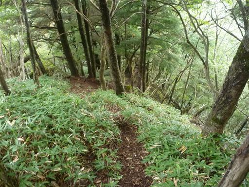
稜線下についている巻道に合流。ここからは平らな道を歩いていく。
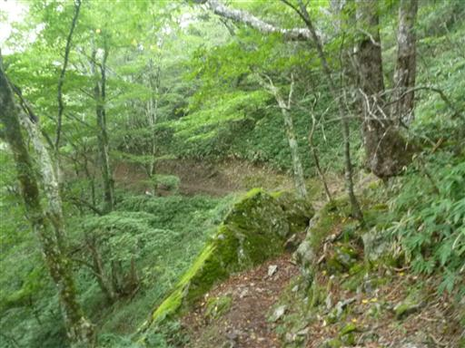
水干に到着。ここが多摩川の源流だ。穴からポタリポタリと雫が落ちている。
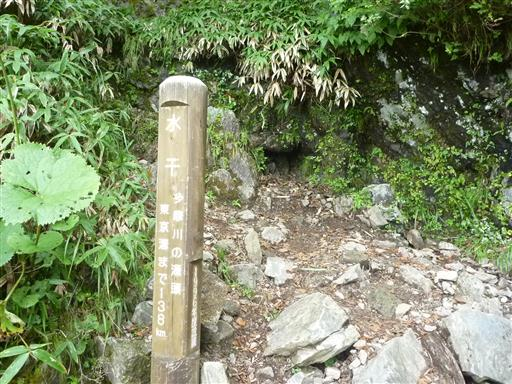
もう少し下に多摩川の最初の流れが見られるので、登山道から外れて見に行ってみる。
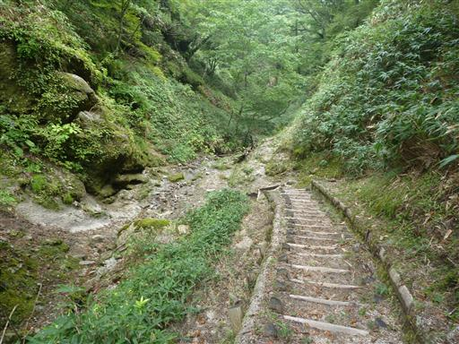
ここが多摩川の源流。水がチョロチョロと流れている。
なかなか雰囲気の良い場所だが、ここにもキシャヤスデが大量発生…
このキシャヤスデ、8年に1回大量発生するらしく、ネットで調べたところ
この辺りの前回の大量発生は2004年だったようだ。ということは今年は当たり年ということだ。
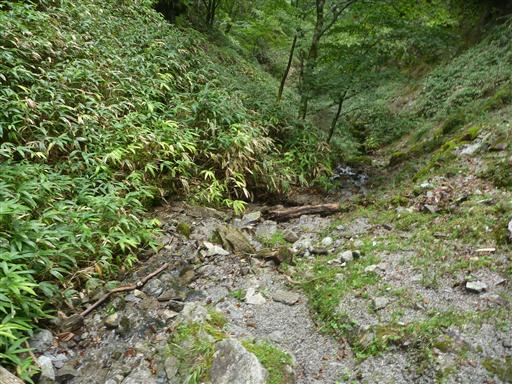
来た道と合流し笠取小屋に戻ってくる。
煙がもうもうと出ているので小屋の主人が来ているようだ。
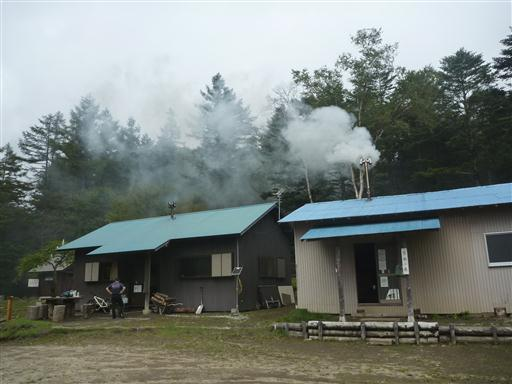
小屋の付近には大きなマルバダケブキが咲いている。
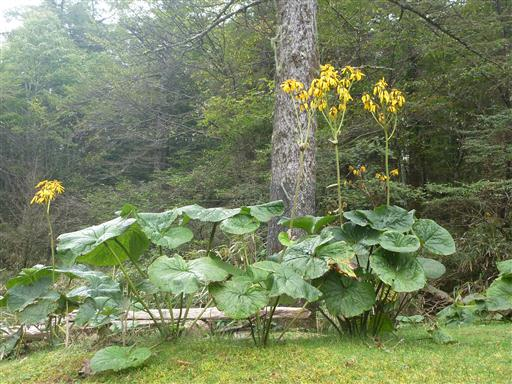
下りはヤブ沢峠経由の道を選択する。まるで林道のような道だ。
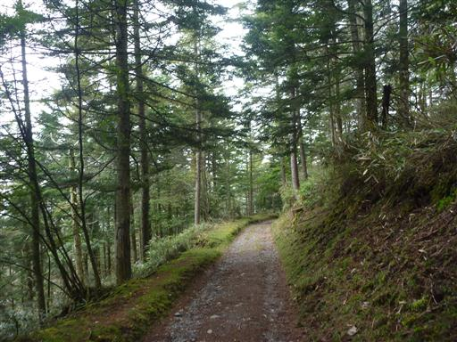
ヤブ沢峠に到着。ここで林道のような道から外れる。
この道ははるか南の方まで続いているのだが、ずっとこのような道が続くのだろうか…？
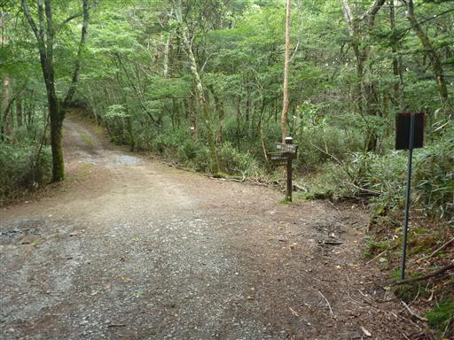
ここから先は登山道らしい道になる。
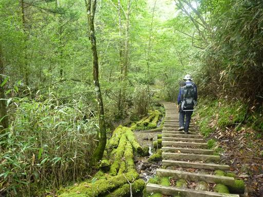
この辺りの緑は非常に濃い。紅葉はまだまだ先のようだ。
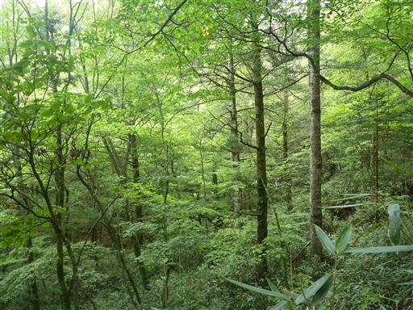
足元を流れる水流は非常に美しい。この水も最終的には多摩川に注ぐことになる。
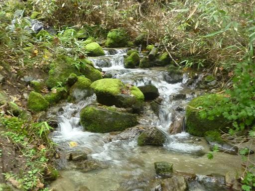
足元を見るとシカの親子がこちらを窺っている。
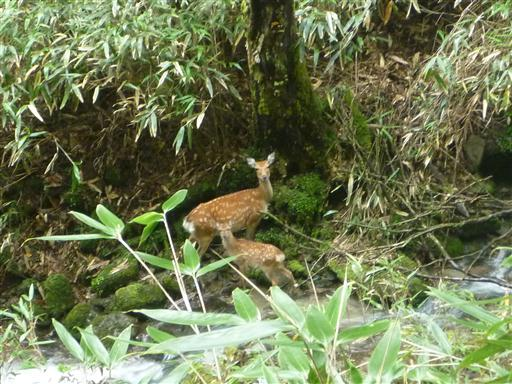
良く整備された歩きやすい登山道が続く。
この辺りの登山道は本当に良く整備されている。
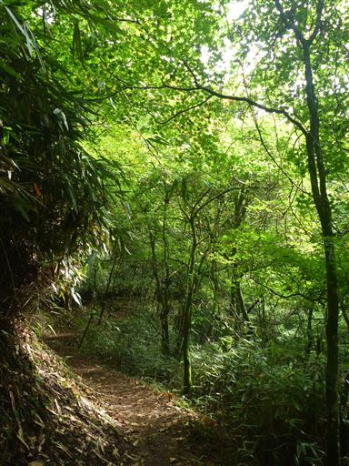
マウンテンバイクを持った人とすれ違う。見かけるのは今日2人目だ。
ある程度上まで行って自転車で下るのだろう。
確かにこの登山道なら自転車でも走りやすそうだ。
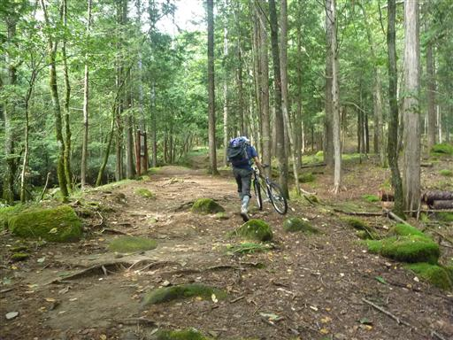
作場平に無事下山。
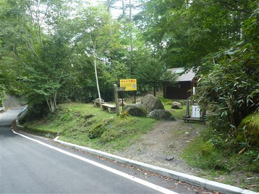
帰りはのめこい湯に寄って帰ることにする。
今回は何よりキシャヤスデが印象に残る登山だったが、山頂付近はあまり数がいなくて助かった。
比較的人が少なく手軽に登れる山だった。
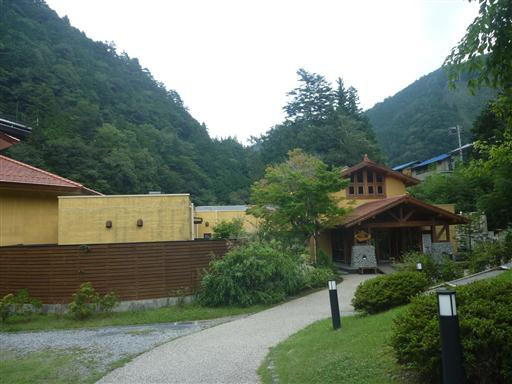